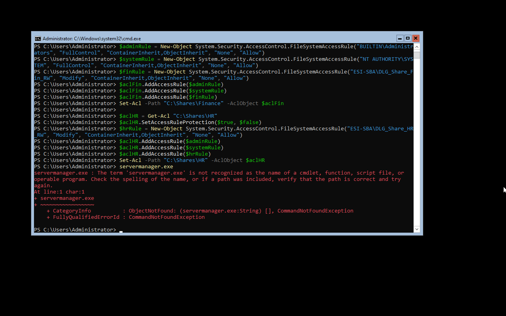
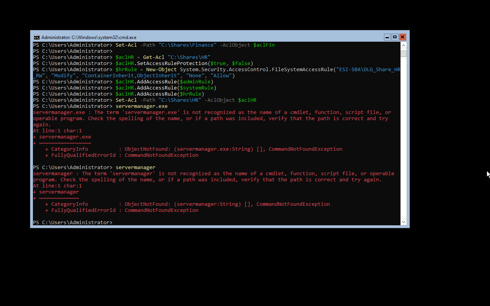
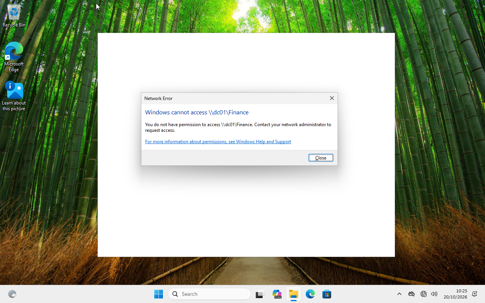
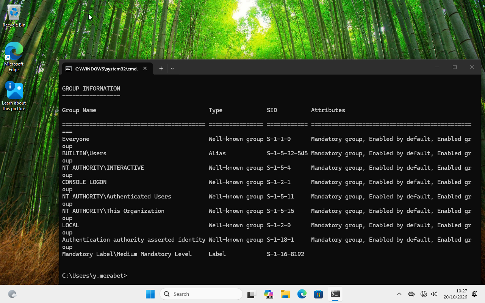
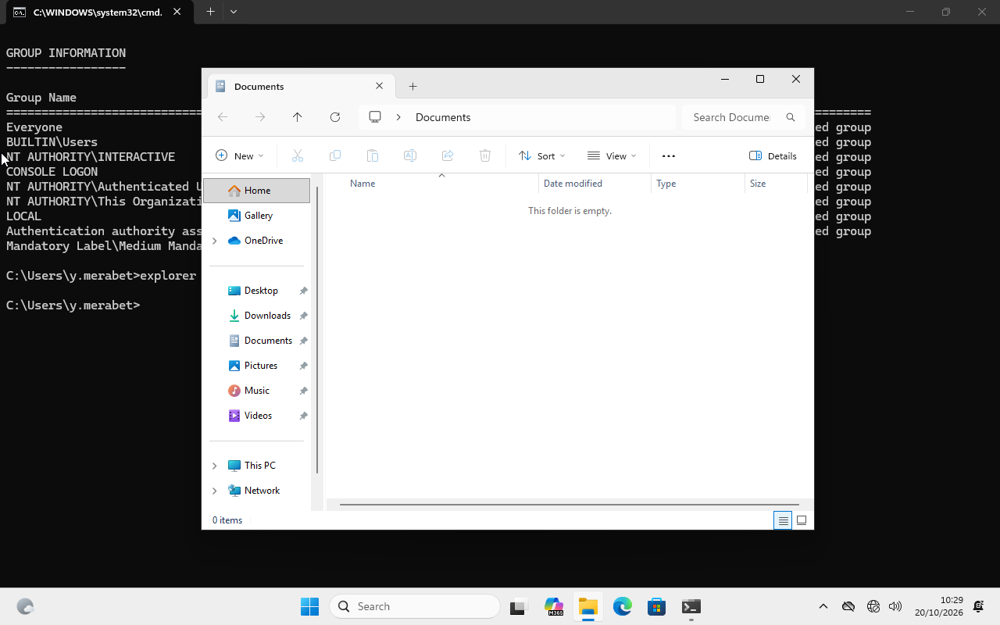
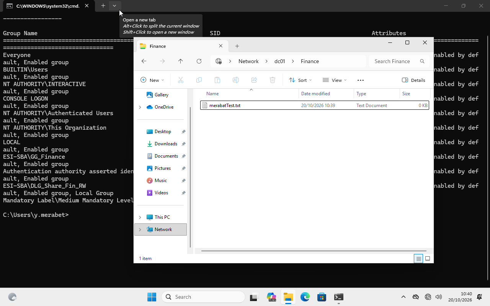
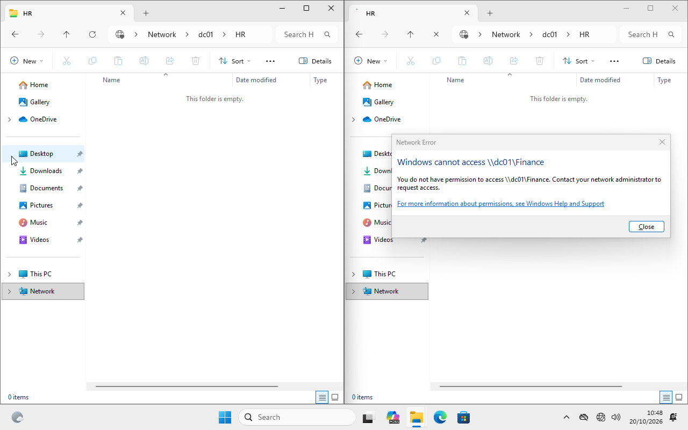
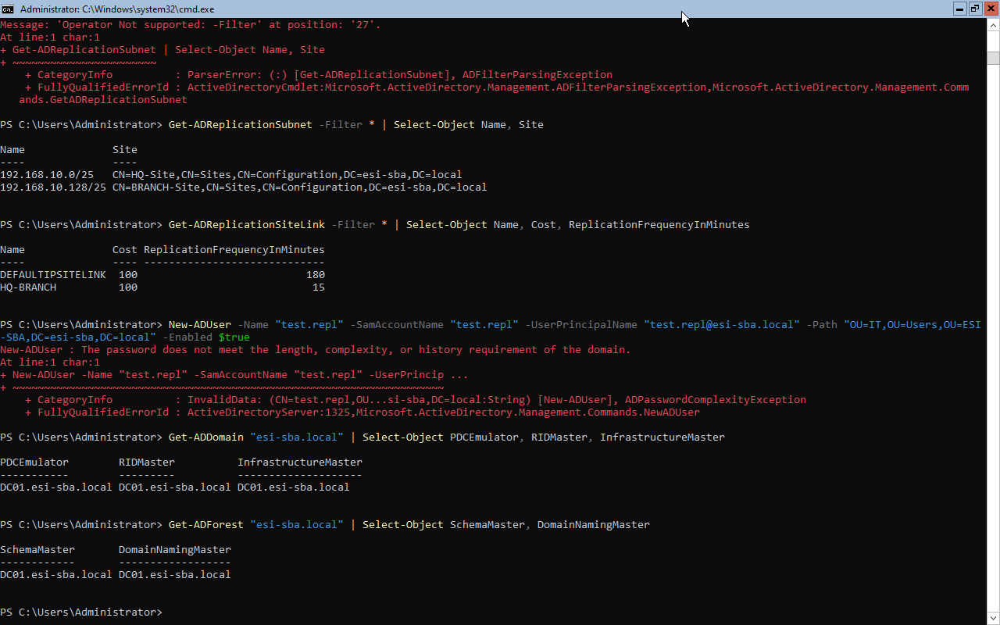
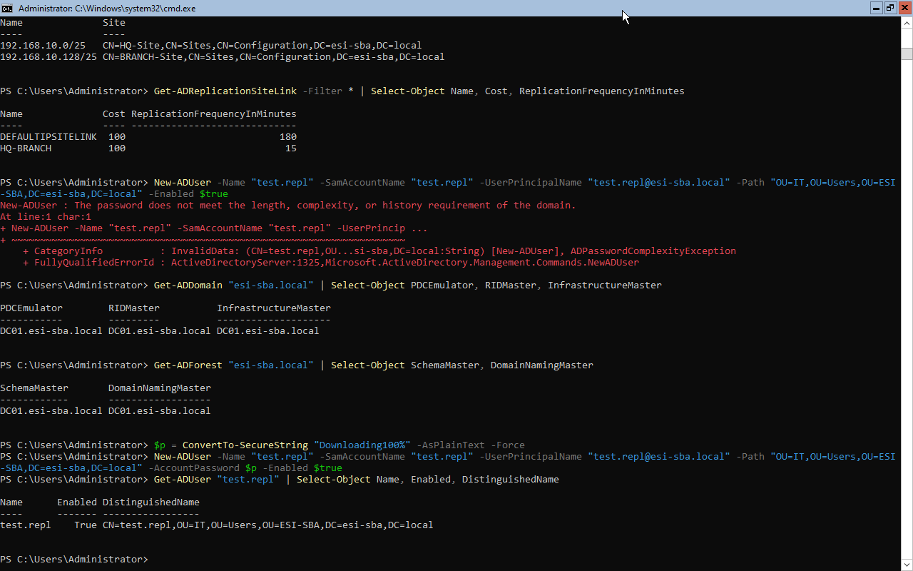

Course: Identity and Access Management (IAM)
Institution: Higher School of Computer Science Sidi Bel Abbès (ESI-SBA)
Date: October 20, 2026
Environment: Linux KVM / QEMU (virsh), Windows Server 2022 Standard (DC01), Windows 11 Pro (CLIENT01)
Network Subnet: LAB-NET (192.168.10.0/24) on isolated bridge virbr1
The purpose of this laboratory is to design, deploy, and validate enterprise-grade Directory Services using Microsoft Active Directory Domain Services (AD DS). This lab covers:
1. Setting up the forest root domain controller (DC01 for esi-sba.local) with integrated DNS, Reverse Lookup Zones, and the Active Directory Recycle Bin.
2. Structuring identities using the AGDLP (Accounts -> Global Groups -> Domain Local Groups -> Permissions) role-based access control paradigm.
3. Delegating administrative privileges (Help Desk password reset) using Active Directory Access Control Entries (ACEs) on Organizational Units (OUs).
4. Creating enterprise SMB network shares (HR and Finance) with restrictive ACLs tied strictly to Domain Local groups.
5. Demonstrating and analyzing Scenario A: Kerberos ticket evaluation, PAC group extraction, token persistence across logon sessions, and security principle inheritance.
6. Enforcing security and desktop baselines using Group Policy Objects (GPOs).
7. Configuring multi-site replication architecture (HQ-Site and BRANCH-Site) with custom subnets, site links, and FSMO role inspection.
| VM Name | Hostname | Operating System | IP Address | Netmask | Preferred DNS | Role in Lab |
|---|---|---|---|---|---|---|
dc01 |
DC01 |
Windows Server 2022 Standard | 192.168.10.10 |
255.255.255.0 |
127.0.0.1 |
Primary Domain Controller, AD DS, DNS, GC, FSMO Master |
win11-lab |
CLIENT01 |
Windows 11 Pro | 192.168.10.50 |
255.255.255.0 |
192.168.10.10 |
Domain-joined client workstation |
| Host Bridge | virbr1 |
Linux Bridge (lab-net) |
192.168.10.1 |
255.255.255.0 |
N/A | Isolated host-only layer-2 virtual switch |
DC01.esi-sba.local)DC01.192.168.10.10/24, Gateway: none, DNS: 127.0.0.1.(UTC+01:00) West Central Africa (W. Central Africa Standard Time) to ensure Kerberos timestamp synchronization within the 5-minute skew window.powershell
Install-WindowsFeature -Name AD-Domain-Services -IncludeManagementToolsesi-sba.localESI-SBA192.168.10.0/24:
powershell
Add-DnsServerPrimaryZone -NetworkId "192.168.10.0/24" -ReplicationScope "Forest" -DynamicUpdate "Secure"esi-sba.local:
powershell
Enable-ADOptionalFeature 'Recycle Bin Feature' -Scope ForestOrConfigurationSet -Target 'esi-sba.local' -Confirm:$false
Figure 1: DC01 Local Server settings, network parameters, and domain controller state.
Figure 2: Active Directory Domain Services and DNS operational status on DC01.The directory was structured with accidental deletion protection:
- OU=ESI-SBA,DC=esi-sba,DC=local
- OU=Users (containing OU=IT, OU=HR, OU=Finance)
- OU=Admins
- OU=Groups
- OU=Workstations
- OU=Servers
- OU=ServiceAccounts
- OU=Disabled
GG_*): Created in OU=Groups to represent departmental memberships:GG_ITGG_HRGG_FinanceGG_HelpdeskDLG_*): Created in OU=Groups to assign resource access:DLG_Share_HR_RWDLG_Share_Fin_RWGG_Finance -> member of DLG_Share_Fin_RWGG_HR -> member of DLG_Share_HR_RW| Account | OU Path | Global Group | Administrative / Lab Role |
|---|---|---|---|
a.benali |
OU=IT,OU=Users,OU=ESI-SBA,... |
GG_IT |
IT Systems Engineer (Daily user) |
k.meziane |
OU=IT,OU=Users,OU=ESI-SBA,... |
GG_Helpdesk |
Help Desk Technician |
s.khelifi |
OU=HR,OU=Users,OU=ESI-SBA,... |
GG_HR |
Human Resources Officer |
m.haddad |
OU=Finance,OU=Users,OU=ESI-SBA,... |
GG_Finance |
Senior Accountant |
y.merabet |
OU=Finance,OU=Users,OU=ESI-SBA,... |
(None initially) | New Accountant (Subject of Scenario A) |
adm-a.benali |
OU=Admins,OU=ESI-SBA,... |
Domain Admins |
Dedicated Domain Administrator Account |
Delegated password reset permissions over all standard user accounts in OU=Users,OU=ESI-SBA,DC=esi-sba,DC=local to GG_Helpdesk:
- Extended Right: User-Force-Change-Password ({00299570-246d-11d0-a768-00aa006e0529})
- Inheritance: Descendant User objects ({bf967aba-0de6-11d0-a285-00aa003049e2}).
Created two secure shares on DC01:
1. C:\Shares\Finance (Share: Finance):
- Inheritance disabled, default permissions stripped.
- BUILTIN\Administrators: Full Control
- NT AUTHORITY\SYSTEM: Full Control
- ESI-SBA\DLG_Share_Fin_RW: Modify / Read / Write
2. C:\Shares\HR (Share: HR):
- BUILTIN\Administrators: Full Control
- NT AUTHORITY\SYSTEM: Full Control
- ESI-SBA\DLG_Share_HR_RW: Modify / Read / Write
CLIENT01)192.168.10.50/24 with DNS pointing to 192.168.10.10.CLIENT01 to esi-sba.local using administrative credentials ESI-SBA\adm-a.benali.CN=CLIENT01,CN=Computers,... to OU=Workstations,OU=ESI-SBA,DC=esi-sba,DC=local.This scenario traces the identity lifecycle of accountant y.merabet who initially possessed an account without group memberships.
[ Account Created: y.merabet ]
│
▼
[ Attempt \\dc01\Finance ] ───────► RESULT: ACCESS DENIED (Error 0x80070005)
│ (Token lacks DLG_Share_Fin_RW)
▼
[ Added y.merabet -> GG_Finance ]
│
▼
[ Same Session Check: whoami ] ──────► RESULT: GG_Finance ABSENT in token
[ Retry \\dc01\Finance ] ──────► RESULT: STILL DENIED (Cached Kerberos TGT)
│
▼
[ Purge Tickets & Re-logon / Reboot ]
│
▼
[ New Session Check: whoami ] ──────► RESULT: ESI-SBA\GG_Finance PRESENT
[ Access \\dc01\Finance ] ──────► RESULT: GRANTED! (Created merabetTest.txt)
When y.merabet attempts to open \\dc01\Finance, Windows denies access:

Figure 3: Initial access attempt to \dc01\Finance by y.merabet resulting in "Windows cannot access \dc01\Finance - You do not have permission".Running whoami /groups proves that the user's logon security token does not contain GG_Finance or DLG_Share_Fin_RW:

Figure 4: whoami /groups on CLIENT01 showing lack of department global group membership in active token.Even after Add-ADGroupMember -Identity GG_Finance -Members y.merabet was run on DC01, the active session on CLIENT01 continues to be denied because the cached Kerberos Ticket-Granting Ticket (TGT) has not been refreshed:

Figure 5: Re-testing \dc01\Finance in the same logon session fails due to existing Kerberos PAC token cache.After logging off and signing back in, a new Kerberos TGT and PAC were generated with the new group memberships. whoami /groups now reflects ESI-SBA\GG_Finance and ESI-SBA\DLG_Share_Fin_RW, and the folder opens with full write permissions:

Figure 6: whoami /groups showing ESI-SBA\GG_Finance & ESI-SBA\DLG_Share_Fin_RW, with \dc01\Finance accessible and test file merabetTest.txt created.| Moment | \\dc01\Finance Access |
GG_Finance in whoami /groups |
Effective Access on DC01 |
|---|---|---|---|
| Before Group Membership | ❌ Denied (Dialog error) | ❌ Absent | None (Traverse / List denied) |
| After Group Membership (Same Session) | ❌ Denied | ❌ Absent | ✅ Read / Write / Modify |
| After New Logon Session | ✅ Granted (File created) | ✅ Present (ESI-SBA\GG_Finance) |
✅ Read / Write / Modify |
To confirm security boundaries, s.khelifi (HR department) logged onto CLIENT01:
- \\dc01\HR: Opened successfully.
- \\dc01\Finance: Denied with Windows permission error.

Figure 7: Dual validation test under user s.khelifi: \dc01\HR opened successfully on the left, \dc01\Finance denied on the right.Two enterprise GPOs were created and linked to OU=Users,OU=ESI-SBA,DC=esi-sba,DC=local:
1. GPO_U_Wallpaper:
- Deployed central wallpaper to \\esi-sba.local\NETLOGON\esi-sba-wallpaper.jpg.
- Applied via HKCU\Software\Microsoft\Windows\CurrentVersion\Policies\System\Wallpaper.
2. GPO_U_Removable_Storage:
- Enforced restriction HKCU\Software\Policies\Microsoft\Windows\RemovableStorageDevices\Deny_All = 1.
- Blocks unauthorized USB mass storage devices across all department users.
To mirror a distributed enterprise network with a remote branch office:
- Default Site Renamed: Default-First-Site-Name -> HQ-Site
- New Site Created: BRANCH-Site
- Subnet Mappings:
- 192.168.10.0/25 -> Associated with HQ-Site
- 192.168.10.128/25 -> Associated with BRANCH-Site
- Inter-Site Link:
- Name: HQ-BRANCH
- Included Sites: HQ-Site, BRANCH-Site
- Protocol: IP
- Replication Cost: 100
- Replication Frequency: 15 minutes
Active Directory role ownership was verified on DC01:
Get-ADDomain "esi-sba.local" | Select-Object PDCEmulator, RIDMaster, InfrastructureMaster
Get-ADForest "esi-sba.local" | Select-Object SchemaMaster, DomainNamingMaster

Figure 8: Active Directory Subnets (/25), Site Links (HQ-BRANCH), and FSMO role ownership verified on DC01.
Figure 9: User test.repl created in OU=IT to observe directory replication upon branch domain controller addition.We have completed the deployment of the Active Directory core services, AGDLP identity hierarchy, network shares with strict ACLs, client onboarding, security policies, and multi-site replication definitions.
Once additional storage space is freed up on the host machine:
- Phase 5.2 & 5.3: Deploy DC02 in BRANCH-Site, test intra-site vs. inter-site replication convergence delays, account revocation latency, and DC failover.
- Phase 6: Deploy DC03 (labri-sba.local), configure DNS conditional forwarders, establish the one-way forest trust, and validate cross-forest resource access (Scenario B).
EOF